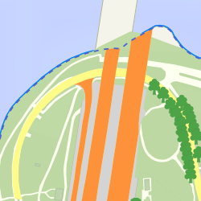

South Perth
This map of South Perth from Nathan Woodrow is based on a set of shapefiles, styled in QGIS Desktop and served with QGIS Server.
View
Swellendam
This map of Swellendam (South Africa) from Tim Sutton is based on OpenStreetmap data, styled in QGIS Desktop and served with QGIS Server in a Leaflet client.
ViewAlaska
This map of Alaska is showing the QGIS demo data styled in QGIS Desktop and served with QGIS Server in a Leaflet client.
View